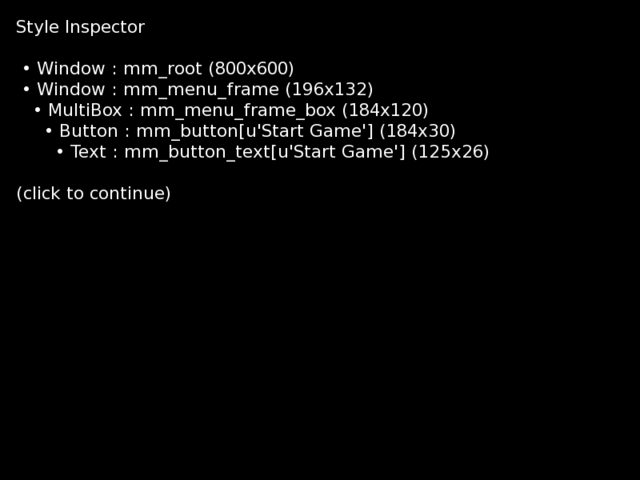

documentation index
Style Customization Tutorial
By default, Ren'Py games are made with a usable but relatively generic style. The purpose of this tutorial is to teach you how to customize the Ren'Py style system to make your game more attractive.
Before we start, we should note that the style system is only one way to customize your game, and may not be able to accomplish all customizations.
- Layouts define the basic look of the various main and game menu screens, such as what buttons and other displayables are present. There are several built-in layouts, including imagemap-based layouts, and it's possible to write your own.
- Themes handle the largest changes to the style system, defining consistent looks along many styles.
- Once you have chosen your layout and theme, you can further tweak the look of your game using the style system.
This tutorial is divided into two parts. The first part gives canned recipes for the most common style customizations. The second part explains how to customize any style and style property in the system, using the style inspector and style tree tools.
Common Style Customizations
Customize Any Style
The first thing one needs to do to when customizing styles is to determine which style it is you really want to customize. The easiest way to do this is to use the style inspector. It's also possible to use the style heirarchy tool to determine styles.
Style Inspector
To use the style inspector, place the mouse over any element in the game, and press shift+I. If nothing happens, then set config.developer to True, and restart your game. Otherwise, a screen similar to the following will pop up, showing the styles and Displayables underneath the mouse.

This screenshot was created by hovering over the "Start Game" button on the demo game main menu, and pressing shift+I.
Each line contains the following three fields:
- The kind of displayable that is being shown.
- The name of the style that is being used by that displayable.
- The size of the displayable.
The lines are arrange in the order that things are drawn on the screen, so that the first line is the farthest from the user, and the last line is closest to the user. Indentation is used to represent nesting of displayables. Such nesting may affect the positioning of the various displayables.
Style Hierarchy
Styles may inherit from each other. The precise nature of style inheritance varies based on the layouts and themes that are being used. For a full accounting of styles the system knows about, hit shift+D and choose "Style Hierarchy". This will display a list of styles that the system knows about.
The styles that can be expected by all games to exist are:
- style.default (Everything) — The root of the style hierarchy. It must have a value for all style properties, and all properties take their default value from here.
- style.bar (Bar) — Horizontal bars intended to convey information without allowing the user to adjust their value.
- style.button (Button) — Normal sized buttons.
- style.small_button (Button) — Smaller than normal buttons.
- style.button_text (Text) — Text inside buttons.
- style.small_button_text (Text) — Text inside smaller than normal buttons.
- style.centered_text (Text) — Text displayed by the pre-defined centered character.
- style.centered_window (Window) — Window containing text displayed by the pre-defined centered character.
- style.frame (Window) — Frames are windows intended to contain buttons, labels, and other ui components. Used by default by ui.frame.
- — Frames that are part of the main or game menus.
- style.gm_root (Window) — An empty Window placed at the root of the game menu.
- style.hbox (Box) — A box that lays out its children from left to right.
- style.hyperlink_text (Text) — Hyperlinked text, using the {a} text tag.
- style.image_button (Button) — ui.imagebuttons.
- style.input_prompt (Text) — Prompt text used by renpy.input.
- style.input_text (Input) — Input fields produced by renpy.input and ui.input.
- style.label (Window) — Window surrounding the text of a label. Labels are small amounts of text used in the game menu.
- style.label_text (Text) — The text of a label.
- style.large_button (Button) — A large button, like those used for slots in the file picker.
- style.large_button_text (Text) — Text used by large buttons.
- — Box containing an in-game menu, like those shown using the menu statement.
- — Text of a caption used in an in-game menu.
- — Text of a menu choice.
- — Text of a menu choice that has been chosen in some earlier game.
- — Button containing a menu choice.
- — Button containing a menu choice that has been chosen in some earlier game.
- — Window containing an in-game menu.
- style.mm_root (Window) — Empty window shown at the root of the main menu.
- style.prompt (Window) — A window containing prompt text. Prompt text is used in the game menu, and is generally longer than label text.
- style.prompt_text (Text) — Prompt text.
- style.say_dialogue (Text) — Dialogue in the say statement.
- style.say_label (Text) — The name of the character speaking in the say statement.
- style.say_thought (Text) — Dialogue spoken by the default narrator.
- style.scrollbar (Bar) — Horizontal scrollbars thay may or may not be intended to be adjusted by the user.
- style.slider (Bar) — Horizontal bars that are intended to be adjusted by the user.
- style.vbar (Bar) — Vertical bars intended to convey information without allowing the user to adjust their value.
- style.vbox (Box) — A box that lays out its children from top to bottom.
- style.vscrollbar (Bar) — Vertical scrollbars thay may or may not be intended to be adjusted by the user.
- style.vslider (Bar) — Vertical bars that are intended to be adjusted by the user.
- style.window (Window) — Window that's used to show dialogue and other in-game text.
layout.button_menu
Invoking layout.button_menu, as the default game template does, makes a couple of changes to the default style hierarchy.
- menu_choice is reparented to button_text.
- menu_choice_button is reparented to button.
This makes menu choices look like buttons.
Style Indexing and Inheritance
Some styles used by the game may be index. For example, the style mm_button[u"Start Game"] is the style mm_button indexed with the string u"Start Game". Indexing is used to specifically customize a single button or label.
According to the style hierarchy tool, the default inheritance hierarchy for the mm_button style is:
- mm_button
- button
- default
When indexed with u"Start Game", it becomes.
- mm_button[u"Start Game"]
- mm_button
- button[u"Start Game"]
- button
- default[u"Start Game"]
- default
Ren'Py will look at styles in this order until it finds the first style in which a value for the property is defined.
Setting Style Properties
Each displayable is in one of two roles, selected or unselected. The selected role is used, for example, to indicate the page that is being shown, or the current value of a preference. The unselected role is used for all other displayables.
Each displayable is in one of four states:
- insensitive, unable to respond to user input.
- idle, able to respond to user input, but not focused.
- hover, able to respond to user input, and focused.
- activate, chosen by the user (for example, a clicked button).
The roles and states correspond to prefixes that are applied to style properties. The role prefixes are:
- "" (no prefix) - set for both selected and unselected roles.
- "selected_" - set for only the selected role.
The state prefixes are:
- "" (no prefix) - set for all states.
- "insensitive_" - set for the insensitive state.
- "idle_" - set for the idle state.
- "hover_" - set for the hover and activate states.
- "activate_" - set for the activate state.
To set a property, one assigns a value to the python expression:
- style.<style name>.<role prefix><state prefix><property>
For example:
init python:
style.mm_button.background = "#f00"
style.mm_button.hover_background = "#ff0"
style.mm_button.selected_hover_background = "#00f"
style.mm_button[u"Start Game"].background = "#0f0"
The first line sets the background of all main menu buttons to be red. The second changes the background of hovered main menu buttons to be yellow. The third changes selected and hovered main menu buttons to be blue - this doesn't actually do anything, since main menu buttons are never selected. Finally, the last one changes the index style to have a green background. Since the indexed style is hire in the inheritance order, it will take precedence over all other styles.
Note that the order of statements matters. The code:
init python:
style.mm_button.hover_background = "#ff0"
style.mm_button.background = "#f00"
Will cause hovered main menu buttons to have a red background. This is because the second statement, which sets all roles and states, takes precedence over the first statement. Generally, it makes sense to set the unprefixed properties first, and the prefixed properties second.
documentation index
{kind=link}